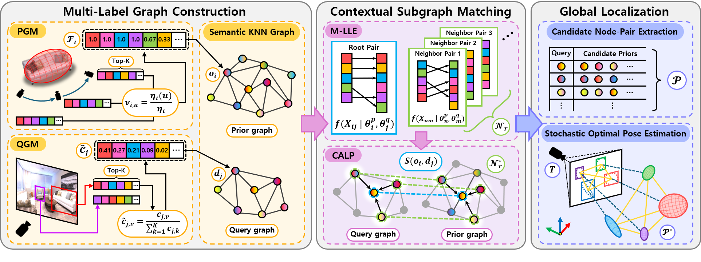
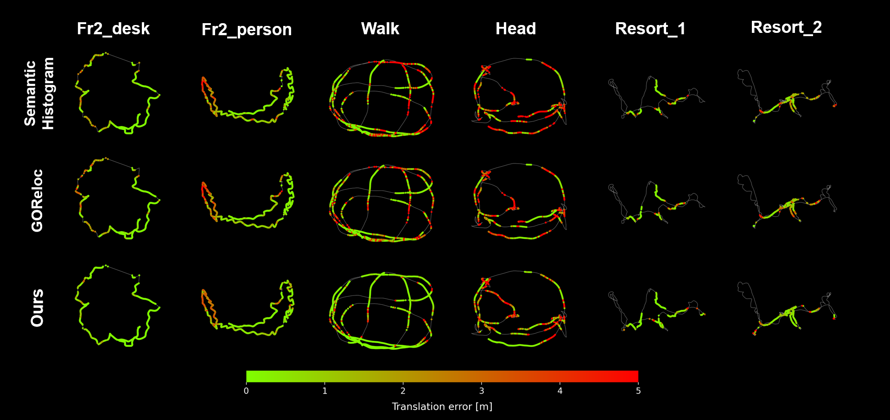
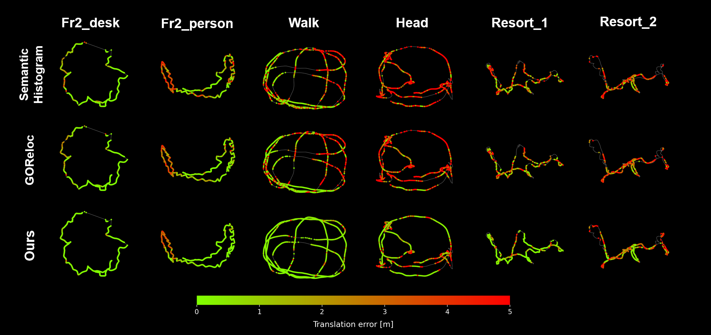
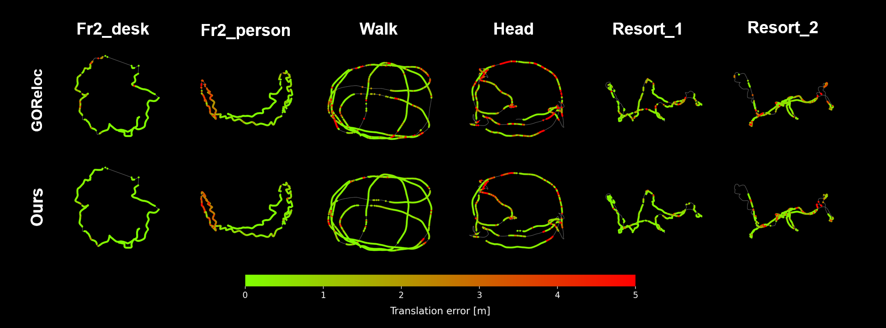
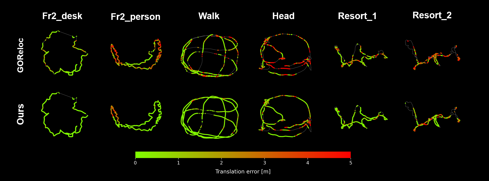

TL;DR Multi-label likelihood estimation and context-aware Semantic Graph matching framework for robust object-level global localization under semantic ambiguity.
Abstract
Robots are often required to localize in environments with unknown object classes and semantic ambiguity.
However, when performing global localization using semantic objects, high semantic ambiguity intensifies object misclassification and increases the likelihood of incorrect associations, which in turn can cause significant errors in the estimated pose.
Thus, in this letter, we propose a multi-label likelihood-based semantic graph matching framework for object-level global localization.
The key idea is to exploit multi-label graph representations, rather than single-label alternatives, to capture and leverage the inherent semantic context of object observations.
Based on these representations, our approach enhances semantic correspondence across graphs by combining the likelihood of each node with the maximum likelihood of its neighbors via context-aware likelihood propagation.
For rigorous validation, data association and pose estimation performance are evaluated under both closed-set and open-set detection configurations.
In addition, we demonstrate the scalability of our approach to large-vocabulary object categories in both real-world indoor scenes and synthetic environments.
Method

Overview of our method.
In the Multi-Label Graph Construction phase, we generate a k-nearest neighbor (KNN)-based semantic graph, embedding multi-label detection frequencies and normalized confidence scores via the Prior Graph Management (PGM) and Query Graph Management (QGM) modules.
Multi-Label Likelihood Estimation (M-LLE) then computes semantic likelihoods from these attributes for both landmarks and observations.
Context-Aware Likelihood Propagation (CALP) propagates the maximum likelihood from neighboring nodes to the root node, calculating its similarity score to ensure contextual consistency.
Finally, candidate node-pairs are extracted, and the stochastic optimal pose estimation module determines the camera pose.
Object-level Global Localization
Closed-set configuration for COCO Categories
TUM RGB-D Fr2-desk sequence
ICL-LM Walk sequence
Open-set configuration for COCO Categories
TUM RGB-D Fr2-desk sequence
ICL-LM Walk sequence
All configuration for LVIS Categories
• Y : Closed-set configuration
• G+T : Open-set configuration
TUM RGB-D Fr2-desk sequence
ICL-LM Walk sequence
Pose Estimation Results

Closed-set COCO

Open-set COCO

Closed-set LVIS

Open-set LVIS
Citation (BibTeX)
@ARTICLE{11297765,
author={Lee, Gihyeon and Lee, Jungwoo and Kim, Juwon and Shin, Young-Sik and Cho, Younggun},
journal={IEEE Robotics and Automation Letters},
title={MSG-Loc: Multi-Label Likelihood-based Semantic Graph Matching for Object-Level Global Localization},
year={2025},
volume={},
number={},
pages={1-8},
keywords={Semantics;Location awareness;Simultaneous localization and mapping;Uncertainty;Three-dimensional displays;Artificial intelligence;Object oriented modeling;Nearest neighbor methods;Pose estimation;Maximum likelihood estimation;Semantic Scene Understanding;Localization;Graph Matching;Object-based SLAM},
doi={10.1109/LRA.2025.3643293}
}
Contact
If you have any questions about this research, please feel free to contact:
We sincerely thank the creators and maintainers of the public datasets used in this work for enabling reproducible evaluation. We also acknowledge the authors of the baseline methods and related open-source implementations for releasing their code and tools, which supported our benchmarking and analysis. Finally, we extend our sincere gratitude to our collaborators at the SPARO lab and Dr. Young-Sik Shin at KIMM for their invaluable contributions to this work.